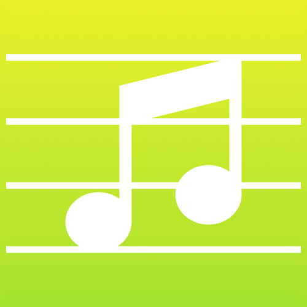

How it works · Step 01
Run. Just run.
Adagio reads your live cadence (steps per minute) from your iPhone, Apple Watch, or Garmin watch.
- iPhone
- Apple Watch
- Garmin
Now on iPhone, Apple Watch & Garmin
Adagio matches your music to your running cadence, step for step. It plays songs from Spotify or Apple Music whose tempo fits your stride, on iPhone, Apple Watch and Garmin.

Works with Spotify, Apple Music & Strava Amazon Music & YouTube Music soon
Finish line176spm
Try it · 30 seconds
Step pad
F left · J right
Step left, right, left, right at your running pace.
Your stride
Waiting for steps
Your cadence
176steps / min
What Adagio would queue
Genres are just examples of songs at that tempo. Adagio finds matches in your own playlists.
How it works · Step 01
Adagio reads your live cadence (steps per minute) from your iPhone, Apple Watch, or Garmin watch.
How it works · Step 02
It finds songs from Spotify or Apple Music whose tempo (BPM) fits your cadence.
How it works · Step 03
When your pace changes, the music adapts so every footstep lands on the beat.
Features · Smart song matching
Not every song has tempo data, and Spotify no longer shares it with apps. So we built our own song-tempo lookup that searches several databases. If a playlist doesn't have enough exact matches, Adagio gradually widens the match range, and it also counts half-time and double-time songs, so you always have music that fits your stride.
Cadence
176spm
Up next, in step
176 BPM · 1× match
Cadence matching
Real‑time
Music tempo follows your steps per minute as you run, so every beat lands with your stride.
Spotify + Apple Music
2
Use the streaming service you already have. Adagio works with both.
Compatible devices
Run with the device you already wear. Adagio is made for iPhone, Apple Watch and Garmin.
Accessibility · Haptic Mode
Haptic Mode is built for deaf and hard-of-hearing runners. Instead of sound, your phone and watch pulse to the beat of your target tempo, and they cue you when you're above or below your target pace. Everyone can run in rhythm.
Why we built it
We're both on our school's cross country team, and we see people run with AirPods in all the time. That got us asking: how could we connect mental health and physical fitness?
Music is one of the best things for your mind. Running is one of the best things for your body. But they usually aren't connected. Adagio changes that by matching your music to your running pace.
When your music moves with you, runs feel easier, and it's easier to finish them and enjoy them.
Roadmap
Team
Ryan Soudkhah
Co-founder & developer
Darren Kapturski
Co-founder & developer
Contact
For questions, feedback and inquiries, write to us. We read everything.